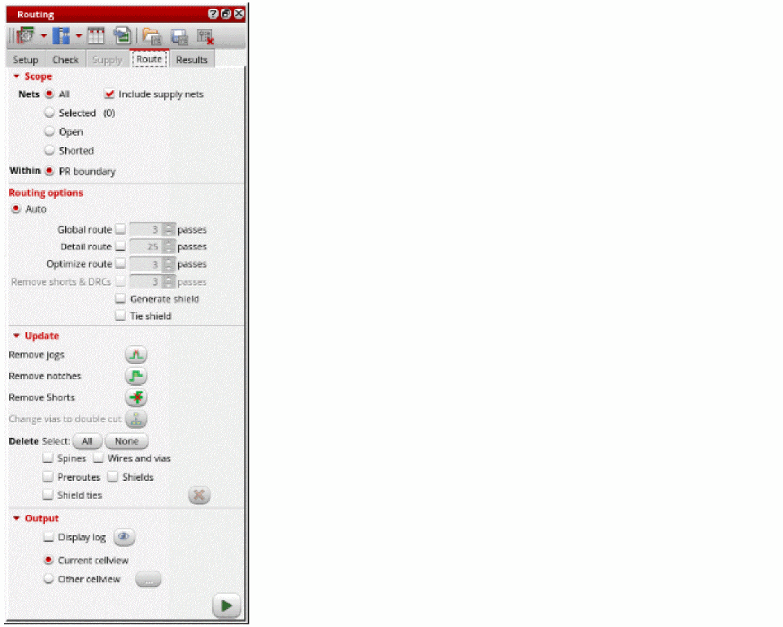
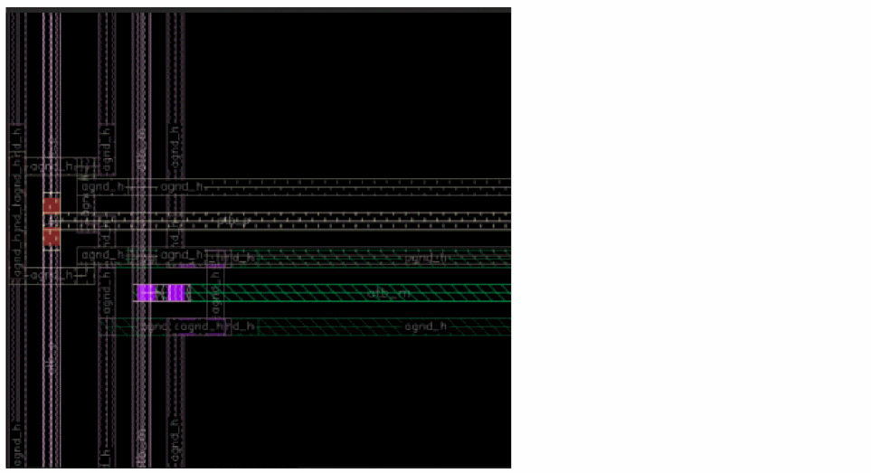

Generating Shields
The shield wires are around signal nets to improve signal integrity. The shields must be generate before routing the signal nets so that the router leaves additional clearance for the shield wires. You can generate shields only when the shield constraint is defined on the selected nets. A shield constraint can be created using Routing Constraint Manager. For more information, see Creating a Shield Constraint.
- Open a design in Layout MXL.
- Select nets from the Navigator assistant.
-
Choose Window – Assistants – Routing.
Alternatively, right-click anywhere on the layout window menu bar and choose Assistants – Routing. -
In the Routing assistant, click the Route tab.
 - Select Generate shield in the Routing options section. If the option is unselected, the shielding wires can still be routed as a post-route process. In such case, the router takes care of the extra spacing required by the shielding while routing the regular nets.
-
Select Tie shield.
-
Click Run signal router
 to run routing. You can check the log file to view statistical information.
to run routing. You can check the log file to view statistical information.

Related Topics
Chip Assembly Routing Configuration
Routing Assistant User Interface for Chip Assembly Routing Flow
Configuring Chip Assembly Routing Settings
Checking Layout Routability in Chip Assembly
Viewing and Analyzing Chip Assembly Routing Results
Return to top